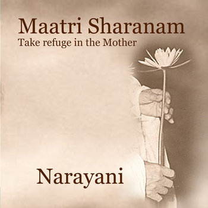
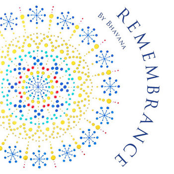

About

I am a psychotherapeutic counsellor, voice work facilitator, and singer with over 20 years of experience supporting people in both one-to-one and group settings.
My work is rooted in a passion for personal and spiritual development, helping people cultivate greater self-awareness, authenticity, and emotional wellbeing. Whether through counselling or voice work, I offer a warm, compassionate space for healing, growth, and transformation.
Read more
Alongside my counselling practice, I work as a voice work facilitator, supporting individuals and groups to develop confidence, self-expression, and connection through their singing voices.
I trained in The Naked Voice and originally trained as a yoga teacher. Over the years, I have explored a range of trauma-informed therapeutic approaches, including somatic and embodied practices.
These experiences have enriched my understanding of the connection between mind, body, emotions, and spirit, and ultimately led me to undertake formal training as a psychotherapeutic counsellor.
Counselling

I am a qualified psychotherapeutic counsellor trained in Transactional Analysis, offering a relational approach that helps people to understand the patterns, beliefs, and ways of relating that shape their lives.
My approach is grounded in the belief that healing and lasting change arise through greater self-awareness, authentic relationship, and compassionate understanding. I aim to provide a safe, supportive, and collaborative space where you can explore your experiences at your own pace.
I support people experiencing a wide range of difficulties, including anxiety, depression, relationship challenges, bereavement, stress, and low self-esteem, I also work with those seeking personal growth, spiritual development, or a deeper sense of purpose, meaning, and wellbeing.

Price: £55 per session.
I am a member of UKATA and I abide by their code of ethics.
Voicework
One-to-One Sessions & Workshops

So many of us believe we cannot sing, or have lost connection with our voice through feeling silenced or unheard. Yet our voice is one of our most powerful tools for expression, connection, and healing. It is a bridge between our inner and outer worlds.
Together, we explore the singing voice as a gateway to greater presence, authenticity, and wholeness. This work is not about becoming a better singer, but about discovering freedom in your voice and allowing it to become a pathway for healing, self-discovery, and authentic expression.
Video - Voicework
People who attend one-to-one sessions and workshops often describe feeling more grounded, confident, and peaceful.
Please me on information for:
- One to One sessions online via Zoom or in person in Alfriston, East Sussex.
Price: £55 per session. - Quarterly Voice Circles in Lewes, or see dandelion link for more information.
KIRTAN
Events and Mentoring
Monthly Kirtan in Lewes

Take a journey through sound and mantra with Narayani’s dynamic and colourful kirtans. Simple chants and melodies make it easy for everyone to join in, with no previous experience needed.
Kirtan is a form of yoga for the voice. Singing together, we use repeated Sanskrit mantras to quiet the mind, free the voice and create a sense of harmony. For some, it brings calm; for others, joy and elation. The rhythm and repetition can help release emotions, let go of tension and guide you towards a deeper sense of stillness within.
Kirtan at Unity Yoga Centre, Lewes
1st Friday of Every Month
19:00 - 20:30
£10-£20 donation to Unity's charitable projects.
The Old Turkish Baths, 35 Friars Walk, Lewes, BN7 2LG
Please visit Unity page for bookings.
Kirtan Mentoring
Online via Zoom or in person in Alfriston.

Sessions may include:
- Learning how to structure and lead a kirtan
- Developing basic harmonium skills
- Exploring the meaning behind the mantras and deities
- Building confidence in singing and leading others
- Cultivating presence, authenticity, and connection as a kirtan leader
Videos
Music
All albums are available for download & streaming on

